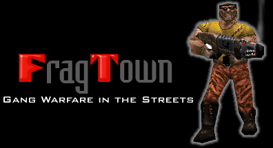

Description
Hello and welcome to the Fragtown Home page! This page is dedicated to a series of Death match levels for Quake which places you into gang warfare on the streets of your favorite city. Each level features unique town designs and settings. The levels can be played in either death match mode or with the reaper bots. If you are wondering why there's so many levels, its because level building is like eating potato chips for me. Once you start, you can't stop!
Fragtown is a series of levels for Quake 1 which features deathmatch in a city setting. Imagine chasing your pals down dark alleys or blasting them to bits from building rooftops and you will understand why I created these levels. The levels include new textures for Quake to pull off a convincing city scene.
Downloads
Pak Files
Pak0.pak - This pak includes fragtown maps 1-7. Pak1.pak - Includes the maps: Fragtw16 - Redmond
idcbase - idc Base Training Facility
idcbace3 - Sewer Plant
Fragtwcb - Fragtown Hoboken
Fragsm - unnamed
Fragcast - Frag Castle
Fragcst2 - Frag Castle 2Pak2.pak - All of the fragtown sounds and skins for the player model. Single Map Files
fragtwn1 - The Bronx
fragtwn2 - Motor City
fragtwn3 - Hillsdale
fragtwn4 - East LA
fragtwn5 - Dallas
fragtwn6 - Pirates Cove
fragtwn7 - Chicago
fragtw16 - Redmond
idcbase - idc Base Training Facility
idcbase3 - Sewer Plant
fragtwca - Fragtown CTF Hoboken
fragtwcb - Fragtown CTF Deathmatch Hoboken
fragsm - unnamed
fragcast - Frag Castle
fragcst2 - Frag Castle 2Skins and Sounds
Additional Notes
There are readme's included with all of the zip files. Make sure you read them for installation instructions or read below.
Bots can also be easily plugged into Fragtown. Just use bots that can support the maps. Recommended bots would be:
Installation Instructions
Lets assume that your quake program is installed on C:\quake directory. What you need to do is to switch to the sub-directory ID1 (i.e. C:\quake\ID1) and create a sub directory there called maps if it doesn't already exist (i.e. CL\quake\id1\maps). Copy the fragtown .BSP files to that directory. Now, return back to your quake root directory and type the following at the dos prompt:
quake +map fragtwn1This will load up fragtwn 1 and you will be ready to play in single player mode (i.e. Kind of boring for a death match level). To set up a server, use this command:
quake +map fragtwn1 -listen 8
This will allow eight other players to connect via IPX network. If you have installed "Reaper Bots" try this command
quake -game reaper +map fragtwn1 -listen 8
Let me know if this was helpful. Good luck and happy fragging...
Authors and Credits
Created by
Bruce Oberleitner (i.e. Demolition Man)
Additional Credits
Steve McCrea
Simon Wall
EliasPlaytesting Team
Steve Dahlin (i.e. Snake Plissken)
Jim Grossel (i.e. Spiff)
Kevin Rank (i.e. Rifter)
Peter Dahlin (i.e. Blade)